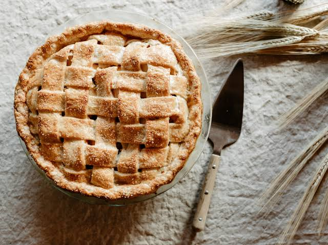

AUTUMN CLASSIC
Spiced Apple Pie
A traditional autumn pastry featuring tart apple slices combined with concentrated cider syrup and fragrant warm spices inside a flaky butter crust.
⏱ 2 hours 30 minutes total
View Recipe
Ingredients
Crust Components:
- 2 1/2 cups standard flour
- 1 teaspoon salt
- 1 tablespoon granulated sugar
- 1 cup cold unsalted butter, diced
- 1 tablespoon apple cider vinegar
- 1/2 cup ice water
Filling Components:
- 1 1/2 teaspoons ground cinnamon
- 1/2 teaspoon ground cardamom
- 1/2 teaspoon ground ginger
- 1/4 teaspoon ground cloves
- 1/4 teaspoon ground nutmeg
- 3 1/2 pounds fresh pie apples, peeled and sliced
- 1/3 cup boiled apple cider reduction
- 1/2 cup white sugar & 1/4 cup brown sugar
- 3 tablespoons cornstarch
- 1 tablespoon fresh lemon juice
- Egg wash and coarse crystal sugar
Instructions
- Blend flour, salt, and sugar. Cut in cold butter chunks until uniform crumbs form, then mix in vinegar and ice water until a dough forms. Divide in two, wrap, and chill for one hour.
- Mix cinnamon, cardamom, ginger, cloves, and nutmeg together in a compact bowl for your spice blend.
- Toss sliced apples with boiled cider, lemon juice, sugars, cornstarch, and a portion of your spice mixture in a large mixing bowl.
- Preheat your oven to 400°F (204°C). Roll out the first dough portion and press it into a 9-inch pie pan.
- Pile the coated fruit into the pastry base, cover with the second rolled dough sheet, trim the overlapping edges, crimp tightly, and slit ventilation vents on top.
- Brush the top crust lightly with egg wash and finish with a heavy dusting of crystal sugar.
- Bake at 400°F for 20 minutes, lower the heat to 375°F (190°C), and bake for another 40 to 50 minutes until bubbling and deeply browned. Let cool entirely before serving.